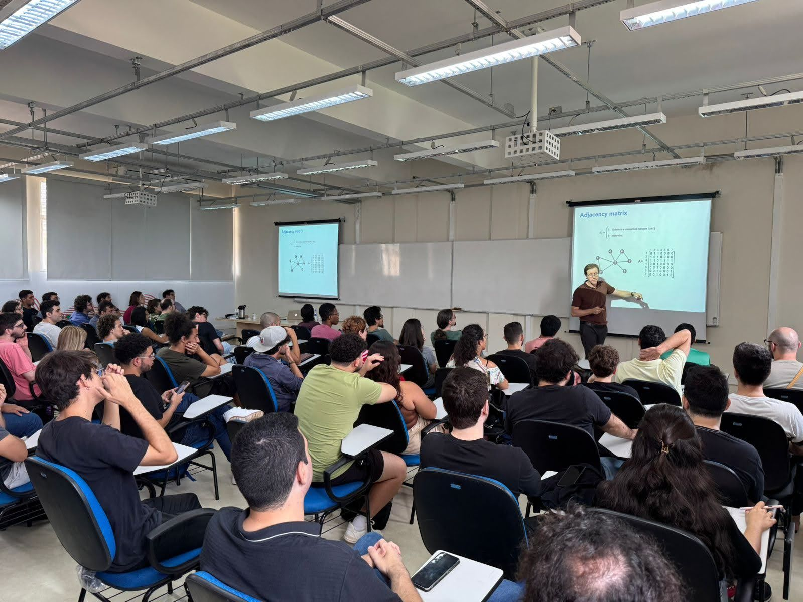
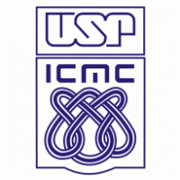
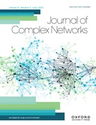
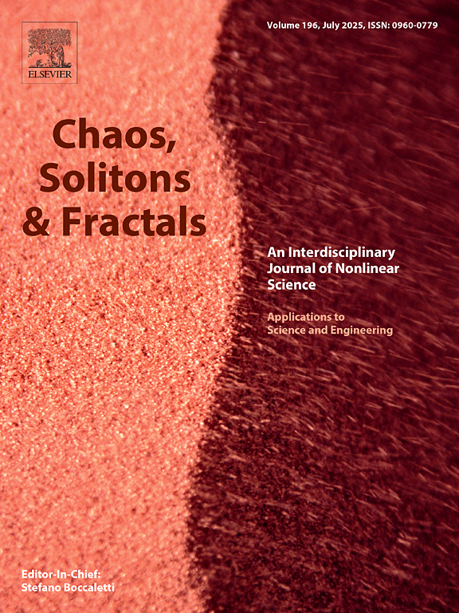
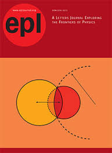
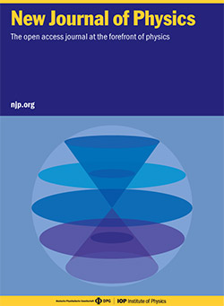
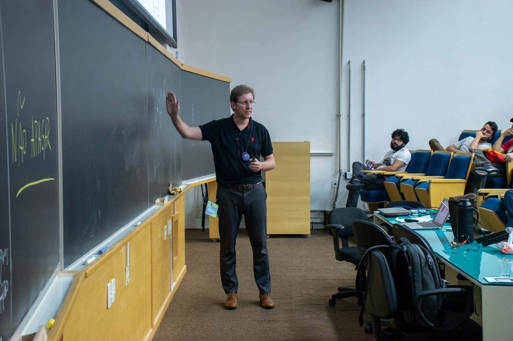
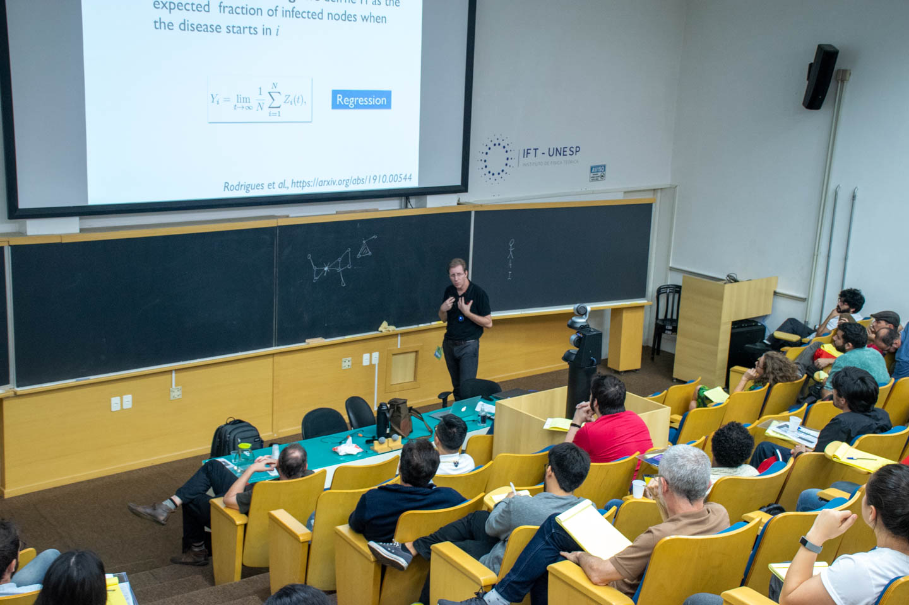
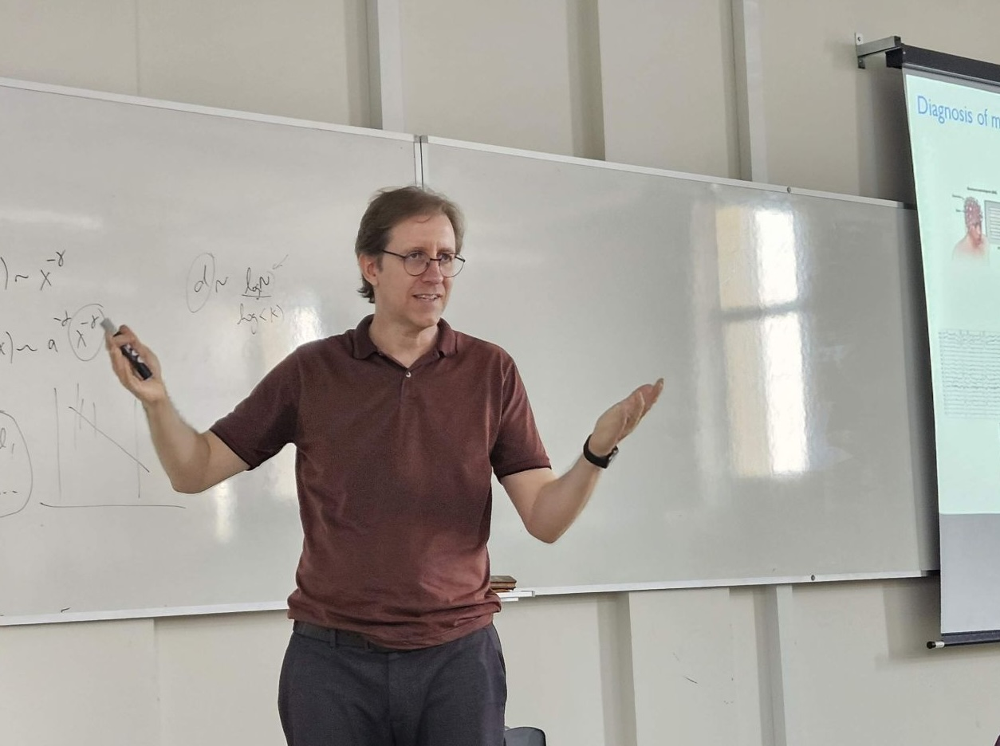

Complex Systems and Data Science | University of São Paulo

Francisco Rodrigues is a Professor of Complex Systems and Data Science at the Institute of Mathematics and Computer Science (ICMC), University of São Paulo - Brazil, the best-ranked and most renowned university in Latin America (85th in the QS World University Rankings). Currently, he is the head of the Department of Applied Mathematics and Statistics. Francisco is also an editor of the Journal of Complex Networks, Chaos, Solitons & Fractals, an associate editor of Journal of Computational Science, a co-editor of the Europhysics Letters (EPL), an associate editor of the Journal of Physics: Complexity and an editor of the New Journal of Physics (NJP). From February 2018 to February 2019, Francisco was a visiting professor at the University of Warwick, the U.K., Mathematics Institute, working at the Centre for Complexity Science. He was awarded a Leverhulme Visiting Professorship (2017/Sciences) . Francisco holds a degree in Physics (2001, B.A. degree) and a master's degree in Computational Physics (2004), both from the University of São Paulo. In 2007, he got his PhD in Physics from the Physics Institute of São Carlos (University of São Paulo). After that, he was a post-doctoral researcher at the same institute with a Fapesp fellowship (2007-2010).
At the beginning of 2010, he got a tenure-track position at the ICMC as a lecturer and researcher. He became an associate professor in 2013 and Full Professor in 2022. Francisco has been a merit scholar of the Brazilian National Research Council (CNPq) since 2011, a distinction held only by a small fraction of Brazilian academics. He coordinated more than 75 research projects (including some international projects). During the last years, he has been working on several problems related to the structure and dynamics of complex systems and data science. He is interested in epidemic models, causal inference, machine learning, synchronization of coupled oscillators and social dynamics. These studies have been applied in several areas, including epidemiology, neuroscience, systems biology, ecology, economy, climate dynamics, and transportation networks. Francisco has authored more than 170 scientific papers in international journals, including Nature Communications, Nature Ecology, Physical Review Letters, Advances in Physics, Physics Reports, Physical Review X, and Climate Dynamics, among others. These papers have received more than 13K citations (Google Scholar) (h-index 44, i10-index 133). He co-authored the book "An Introduction to Multiplex Networks: Basic Formalism and Structural Properties", published by Springer in 2018. He also published the book "Probabilidade e Estatística: Teoria, Simulação e Dados" in 2026.
Francisco has concluded the supervision of more than 17 master's students, 15 PhDs and advised more than 50 undergraduate students. He also supervised more than four postdoctoral researchers. His teaching activities in graduate and undergraduate courses are related to the fields of Data Science, Statistics, Mathematical Modelling, Stochastic Processes, Network Science, and Complex Systems and Networks. Francisco was also a visiting researcher at the Potsdam Institute for Climate Research (Germany), at the University of Zaragoza (Spain) and the Complexity Science Hub Vienna (Austria). Francisco was an invited lecturer at the Aschaffenburg University of Applied Sciences (Germany), Universidad de Zaragoza (Spain), and the University of Warwick (the United Kingdom). His collaboration network includes more than 150 researchers worldwide.
Many of his students have held important positions in universities and companies in Brazil and abroad, including the University of São Paulo (Thomas Peron), University of Campinas (Ruben Iterian), University of Western Australia (Débora Correa), Pontificia Universidad Católica de Chile (Pedro Ramos), Harvard University (Kirstin Roster), Indiana University (Paulo Ventura), Central Bank of Brazil (Michel Alexandre), Google-UK (Luis Dorelli), Google-US (Bianca Oe), and many others (see the complete list).
Francisco keeps a YouTube channel focused on Statistics, Data Science, Stochastic Processes, Physics, and Computer Programming. With over 15,300 subscribers and 500,000 views, his channel serves as a valuable resource for learners worldwide. He also keeps a blog at Medium, where he explores scientific and philosophical topics in both English and Portuguese languages. His channel on Telegram has more than 2,900 subscribers, currently.
In 2023 and 2024, Francisco was included in the top 2% of the world's most cited researchers, in the fields of Artificial Intelligence/Image Processing and Physics/Astronomy.
Francisco was awarded the Friedrich Wilhelm Bessel Research Award in 2025, from the Alexander von Humboldt Foundation. This prize is for internationally renowned academics from abroad in recognition of their outstanding accomplishments in research.







